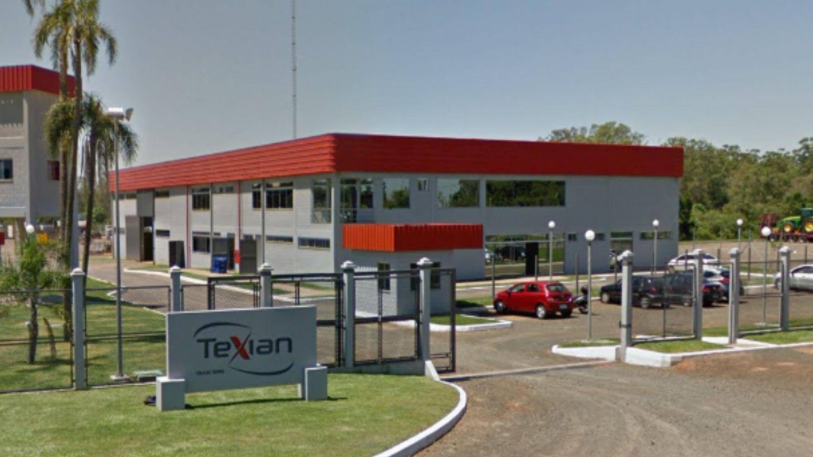
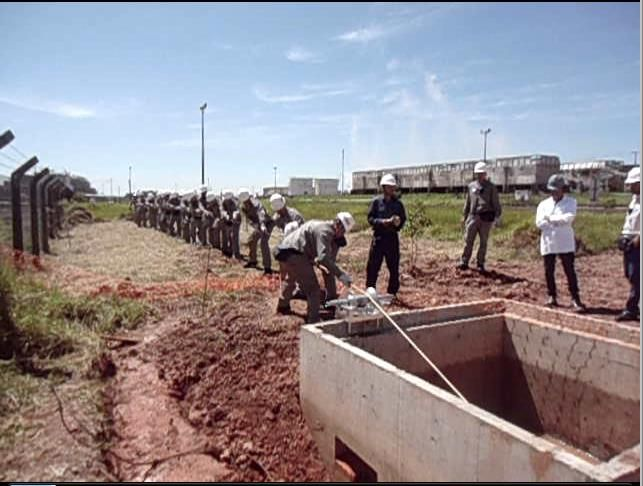
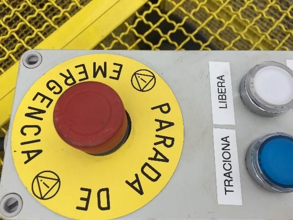

A Texian projeta, monta e faz a manutenção de plantas industriais nas áreas de elétrica, instrumentação, mecânica, caldeiraria e construção civil, com segurança e respeito às normas socioambientais.

Fundada em junho de 1995 por Vitor Jair da Silva, a Texian Manutenção e Montagens Industriais tem base operacional no Distrito Industrial de Montenegro, junto ao Polo Petroquímico do Rio Grande do Sul.
Os serviços são prestados com foco nas necessidades dos clientes, valorização dos colaboradores, zelo pela segurança e integridade, respeito às normas socioambientais e repúdio às práticas corruptivas.
Sobre a empresa →Prestar serviços industriais com excelência, oferecendo soluções seguras, inovadoras e competitivas, para agregar valor ao negócio de cada cliente.
Ser reconhecida como líder em serviços industriais em todo o território nacional, por excelência operacional e inovação contínua.
Segurança e saúde, motivação, desenvolvimento, confiança, compromisso com prazos e equilíbrio comercial.
Subestações até 230 kV, painéis QGBT e CCM, cabos AT/MT/BT, SPDA, termografia, Hipot até 120 kV, comissionamento.
 02
02Instrumentos e válvulas, analisadores, SDCD e CLP, fibra óptica, calibração, loop test e start-up.
 03
03Tubulações industriais, equipamentos estáticos e rotativos, soldas em aço carbono, inox, alumínio e cobre.
 04
04Fundações, concretos especiais, steel deck, revestimentos antiácidos e fireproofing, reformas.
 05
05Pipe-racks, escadas e plataformas, estruturas para pontes rolantes e adequação à NR-12.
 06
06Levantamentos em campo, engenharia básica e detalhada, memoriais de cálculo, desenhos de fabricação e montagem.
 07
07Fornecimento turn-key, painéis e transformadores, andaimes, plataformas elevatórias, munck e guindaste.


Antes
DepoisDuplicação da Copesul, empresa de primeira geração do Polo Petroquímico de Triunfo.
Modernização do controle da Braskem com mais de 400 colaboradores, e obra na refinaria REMAN, em Manaus.
Duplicação da CMPC Celulose Riograndense, em Guaíba, em parceria com a Siemens.
30 anos, contrato com a Vibra e início das operações na Tupy, em Joinville.